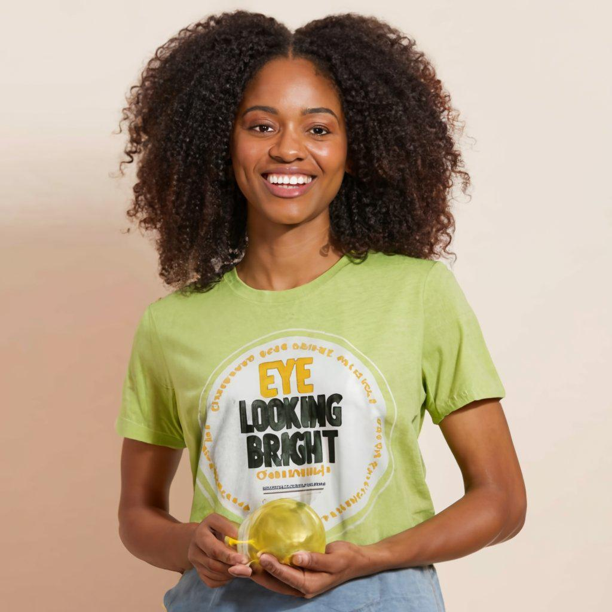

Eye looking Bright Capsule Ojutila
This herbal products (eye looking bright ojutila ) works perfectly in
gradually correcting any kind of eye defect be it itchy eye,
cataract,diabetic eye, blur vision,night blindness, glaucoma ect It
can be used by anyone having eye issues, that haven’t been operated.
It contains serval herbs combination that works perfectly for eyes
problems, that’s why our package contains four different herbal
product working for eyes

Our Product Contains:
Eye Looking Bright Herbal Capsule OJUTILA Eye Drop Blood Booster
Liquid Diabetes Prevention and cure Herbal Liquid
Eye looking bright herbal capsule ojutila prevention and cure against